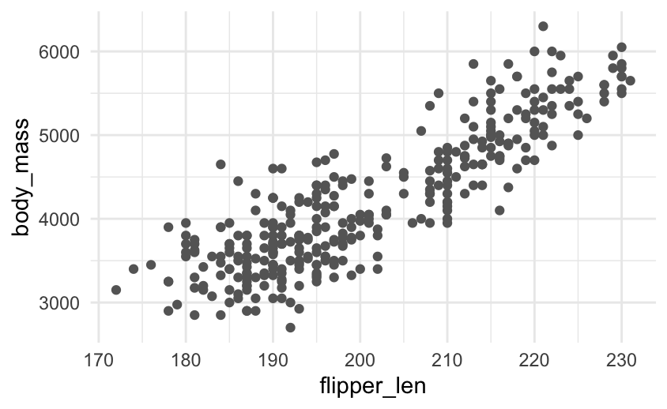
A little while back I announced quarto-timeline, a Quarto extension for styled timelines. It showed some of the basic use cases and how you could change some settings. In this blogpost I will show how we can push the envelope a little bit. The main thing that makes this possible is that .event can contain anything we want.
Example 1: Watching an analysis take shape
A first easy one is have chunk output appear in .events, specifically generated plots. This example uses the penguins data set and shows the progression of the chart.
The pattern is just a code chunk dropped inside an .event:
:::: {.event data-label="Model"}
```{r}
ggplot(clean, aes(flipper_len, body_mass, colour = species)) +
geom_point(alpha = 0.6) +
geom_smooth(method = "lm", se = FALSE)
```
::::
NoteCSS for this example
<style>
.analysis .event img {
max-width: 100%;
height: auto;
border-radius: 6px;
}
</style>Load the raw data. Straight from the source.
Colour by species. Three clusters separate out almost immediately.
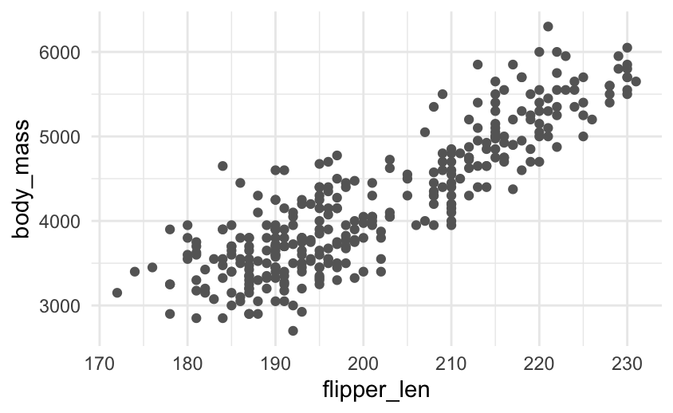
Fit a line per species. Body mass scales with flipper length within each.
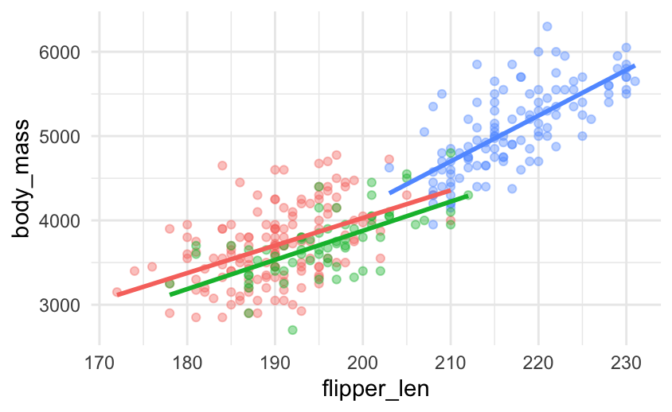
Polish for the audience with labels, a clear palette, and a title.
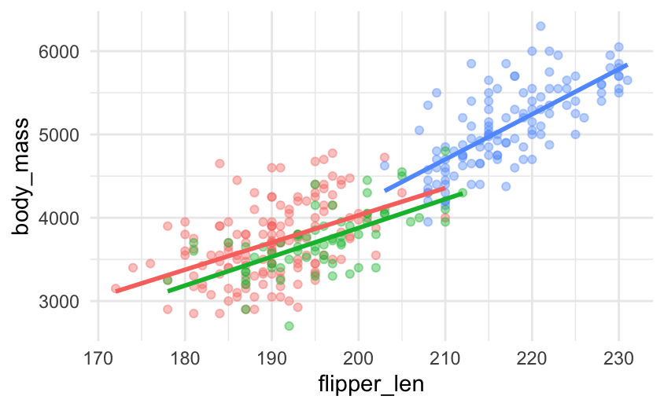
Because the timeline only cares about the rendered output, the same approach works for tables, leaflet maps, htmlwidgets, anything Quarto can put on the page.
Example 2: The Summer Games, by the numbers
But we are not even limited to 1 thing inside an .event, it can contain as much or as little as you want. Here each marker is a little magazine card that combines three things: the host country’s flag, a headline stat, and a sparkline showing where that edition sits in the long-run trend of athlete numbers. The flags are static images, the sparklines are generated on the fly, and a flexbox lays them side by side, all inside one .event.
The card is a .mag flexbox wrapping the flag and a .mag-body, and the sparkline is just an {r} chunk that highlights the current Games:
:::: {.event data-label="2008"}
::: {.mag}
{.flag}
::: {.mag-body}
#### Beijing
[204]{.stat} nations · [10,942]{.stat} athletes
```{r}
spark(2008)
```
:::
:::
::::
NoteCSS for this example
<style>
.olympics .event .mag {
display: flex;
align-items: center;
gap: 1rem;
}
.olympics .event .mag > .quarto-figure { /* the flag, wrapped by Quarto */
margin: 0;
flex: 0 0 auto;
}
.olympics .event .mag > .quarto-figure figure,
.olympics .event .mag > .quarto-figure p { margin: 0; }
.olympics .event img.flag {
width: 160px;
height: auto;
border: 1px solid rgba(0, 0, 0, 0.15);
border-radius: 3px;
display: block;
}
.olympics .event .mag-body { flex: 1 1 auto; }
.olympics .event .mag-body h4 { margin: 0 0 0.15rem; }
.olympics .event .mag-body p { margin: 0.1rem 0; }
.olympics .event .mag-body .stat { font-size: 1.05rem; }
.olympics .event .mag-body img { max-width: 100%; } /* the sparkline */
</style>
Sydney
199 nations · 10,651 athletes

Athens
201 nations · 10,625 athletes
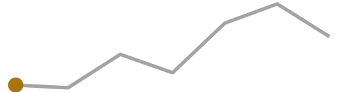

Beijing
204 nations · 10,942 athletes
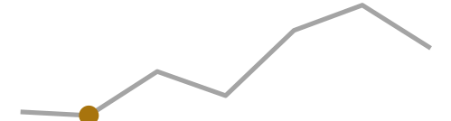

London
204 nations · 10,768 athletes
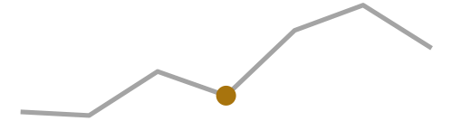

Rio de Janeiro
207 nations · 11,238 athletes


Tokyo
205 nations · 11,420 athletes
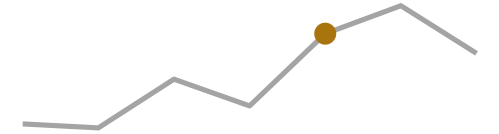
Paris
204 nations · 11,110 athletes
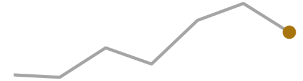
Example 3: A decade of tidymodels in hex stickers
If we are willing to dive a little bit deeper with some CSS then we can do even more. I always wanted to see how the number of tidymodels hexes happened over time. With some CSS we can create a new class that tiles the hexes as we would expect.
NoteCSS for this example
<style>
.timeline .event img.hex {
/* R hex stickers are pointy-top: PNG height is point-to-point,
width is flat-edge to flat-edge (height / width == 2 / sqrt(3)). */
height: 72px;
width: auto;
margin: 0;
display: block;
}
.timeline .event .hexrow > p {
display: flex;
gap: 0; /* vertical flat edges meet, so the row tessellates */
margin: 0;
}
/* Left-side events (.vertical-alt odd) hug the timeline: right-align the comb */
.timeline.vertical-alt .event:nth-child(odd) .hexrow > p {
justify-content: flex-end;
}
.timeline.vertical-alt .event:nth-child(odd) .hexrow.offset > p {
margin-left: 0;
margin-right: 31px;
}
</style>Each year is then split into one or two .hexrow divs, with every second row getting an .offset class:
:::: {.event data-label="2018"}
::: {.hexrow}
{.hex}
{.hex}
{.hex}
{.hex}
:::
::: {.hexrow .offset}
{.hex}
{.hex}
{.hex}
{.hex}
:::
::::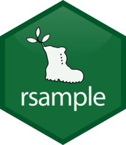
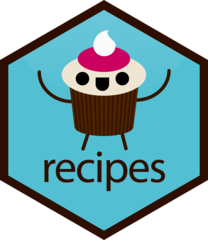
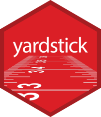
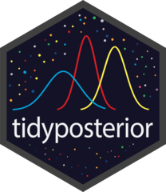
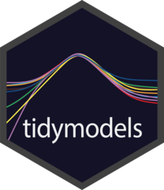
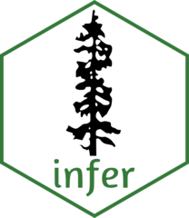
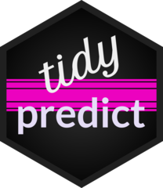
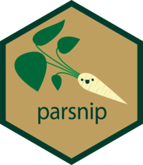
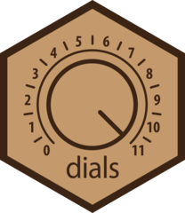
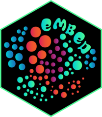
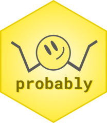
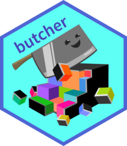
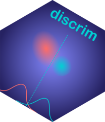
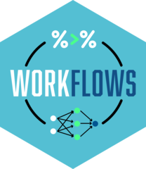
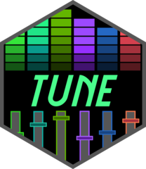
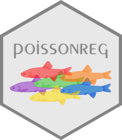
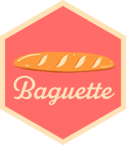
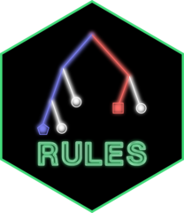
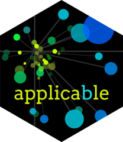
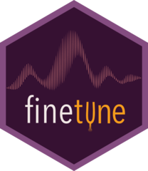
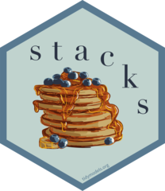
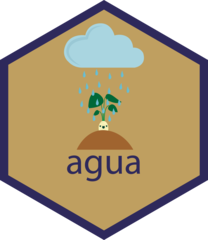
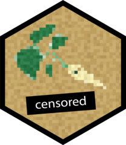
Wrapping up
Three examples, one idea: treat the .event as a normal block of content and the timeline handles the arrangement.
The full documentation, including the gallery, lives at https://emilhvitfeldt.github.io/quarto-timeline/.